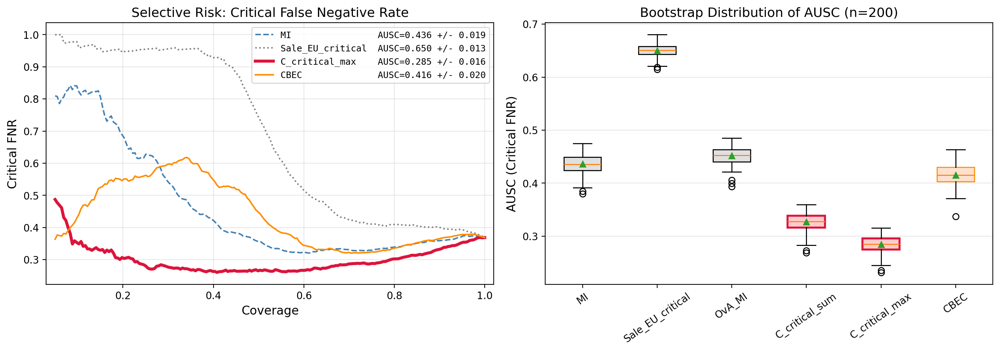
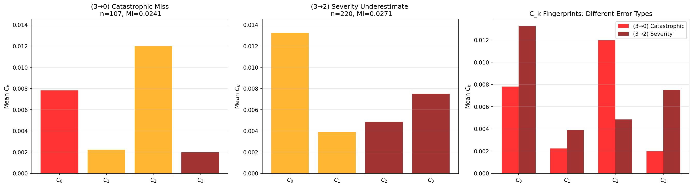
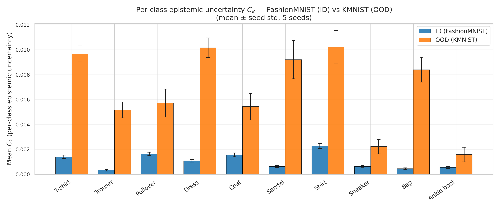
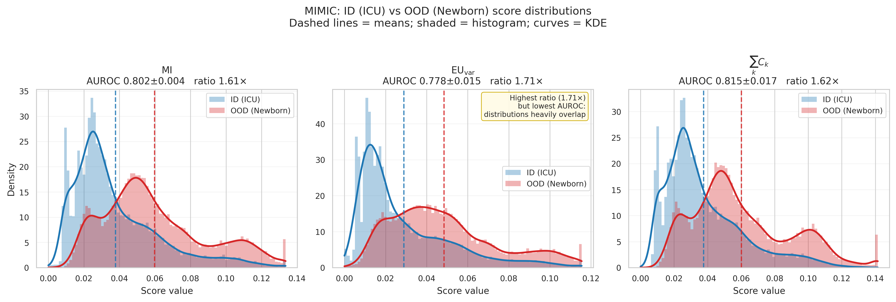
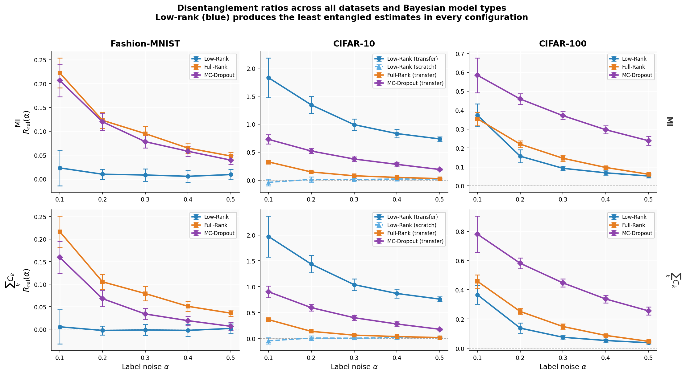

Sample predictions
$S$ stochastic forward passes produce probability vectors on the simplex.
Decomposing Epistemic Uncertainty into Per-Class Contributions
Mutual information says how uncertain a model is. The per-class vector $\mathbf{C}(x)$ reveals which classes drive that uncertainty.
The central problem
In asymmetric classification, ignorance involving a benign class is not equivalent to ignorance involving a safety-critical class. Scalar MI collapses both cases into the same number.
Catastrophic miss: Grade 3 predicted as Grade 0
Severity underestimate: Grade 3 predicted as Grade 2
Their scalar MI is nearly identical, but their per-class epistemic signatures are not.
01 / Method
From $S$ stochastic predictions, estimate each class mean $\mu_k$ and variance $\operatorname{Var}[p_k]$. A second-order Taylor expansion of entropy gives a simple, additive decomposition.
$S$ stochastic forward passes produce probability vectors on the simplex.
Compute the class-wise mean, variance, covariance, and third central moment.
Each $C_k$ identifies the share of epistemic uncertainty associated with class $k$.
Why the normalization matters
On the probability simplex, $\operatorname{Var}[p_k]\leq\mu_k(1-\mu_k)$. As $\mu_k\rightarrow0$, raw variance must vanish even when posterior disagreement remains important.
It arises from the entropy Hessian. A given amount of probability variance carries more information-theoretic weight for a low-probability class.
This makes $C_k$ comparable across rare and common classes, while preserving the additive connection to MI.
02 / Reliability
Boundary correction improves sensitivity to rare classes, but also makes the Taylor approximation more sensitive to higher-order skewness. The paper pairs $C_k$ with a diagnostic.
Use $C_{\text{crit\_max}}$ when critical-class $C_k$ values are reliable. CBEC is the robust alternative when skewness degrades the Taylor approximation.
The A5 violation is the mechanism that counteracts boundary suppression: sensitivity to $\mu_k$ prevents rare-class contributions from being forced to zero.
03 / Evidence
The paper evaluates selective prediction, OoD detection, and sensitivity to controlled label noise.
Selective prediction / diabetic retinopathy

| Family | Policy | AUSC ↓ | Critical FNR @80% ↓ |
|---|---|---|---|
| Scalar | Entropy | 0.604 ± 0.022 | 0.401 ± 0.016 |
| Scalar | MI | 0.436 ± 0.019 | 0.339 ± 0.014 |
| Per-class variance | Sale_EU_crit | 0.650 ± 0.013 | 0.409 ± 0.016 |
| Per-class $C_k$ | $C_{\text{crit\_sum}}$ | 0.327 ± 0.017 | 0.321 ± 0.014 |
| Per-class $C_k$ | $C_{\text{crit\_max}}$ | 0.285 ± 0.016 | 0.302 ± 0.013 |
| Correlation-aware | CBEC | 0.416 ± 0.020 | 0.335 ± 0.014 |
Grade 3 has mean probability near $0.06$. Raw variance is therefore heavily suppressed; the entropy-derived $1/\mu_k$ weighting recovers the critical-class signal.
Across inference methods, the preferred policy follows the diagnostic: direct $C_k$ targeting under reliable posteriors, CBEC when skewness is high.
Interpretability / error signatures

Cross-boundary epistemic confusion is 2.7× stronger than within-group confusion.
Out-of-distribution detection
| Method | FashionMNIST → KMNIST | MIMIC-III ICU → Newborn | ||
|---|---|---|---|---|
| AUROC ↑ | OoD / ID ratio | AUROC ↑ | OoD / ID ratio | |
| Neg. MSP | 0.665 ± 0.013 | 2.07 | 0.688 ± 0.030 | 1.24 |
| MI | 0.724 ± 0.009 | 5.92 | 0.802 ± 0.004 | 1.61 |
| $EU_{\text{var}}$ | 0.710 ± 0.010 | 5.92 | 0.778 ± 0.015 | 1.71 |
| $\sum_k C_k$ | 0.735 ± 0.009 | 6.43 | 0.815 ± 0.017 | 1.62 |


On MIMIC-III, the OoD/ID contribution ratio is $2.15\times$ for survival but $1.30\times$ for mortality. The larger shift signal resides in the non-critical class.
This is why critical-class targeting helps selective prediction, while all-class aggregation is necessary for general OoD detection.
Sensitivity to data quality

Both metrics remain near-perfectly disentangled.
Entanglement increases by over an order of magnitude.
04 / What the paper changes
It enables class-specific questions that scalar uncertainty cannot express: which classes drive uncertainty, whether confusion crosses a safety boundary, and where a distribution shift enters the label space.
Target the uncertainty connected to the costly failure.
Inspect whether shift is uniform or concentrated in particular classes.
Use $\rho_k$ and attribution behavior to examine the quality of uncertainty propagation.
Across all tasks, how uncertainty is propagated through the network matters as much as how it is measured.
Limitations and next steps
The paper is explicit about where the approximation loosens and what must be studied next.
The additive approximation loosens for low-probability classes with high skewness. $\rho_k$ diagnoses this but does not correct it.
The $1/\mu_k$ normalization introduces $O(K^2)$ aggregate scaling, motivating truncation or reweighting.
Future evaluation should include Laplace approximations, SWAG, structured prediction, and low-rank ensembles.
Per-class attribution can support active learning, structured deferral, and richer safety-aware uncertainty profiles.
Resources
Paper, poster, citation, implementation, and project links.
Citation
@inproceedings{
Toure2026not,
title={Not Just How Much, But Where: Decomposing Epistemic Uncertainty into Per-Class Contributions},
author={Mame Diarra Toure, David A. Stephens},
booktitle={Forty-Second Annual Conference on Uncertainty in Artificial Intelligence},
year={2026},
url={https://openreview.net/forum?id=cxuWscJmAr}
}